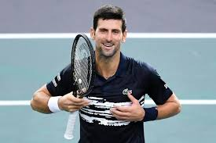
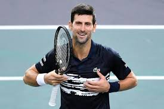

WHO ARE WE ? :
Created in 2017, Tennup pro is a group of friends and professional tennis players who are passionate about making you progress in your favorite sport, tennis. For this purpose we provide you with a special Tennispro program, with nutrition support, mental coaching, as well as tennis courts for all levels in the cities of Paris, Lyon and Nice.
Choose your campus !
MEET OUR TEAM !
Let me introduce you to our brand new team, 4 players who have just retired and will be ready to teach you the basics of tennis, or help you progress to the highest level. Novak Djokovic : 17 grand slam, this former Serbian player will be ready to make you revise the basic strokes of tennis, like forehand and backhand. Rafael Nadal: 20 grand slam tournaments, he will teach you how to move on his favorite surface, clay courts. Roger Federer : With 20 grand slam counters, Roger will help you stay calm on the court, and may even offer a paid training session to teach you how to move your game on grass. Jo-Wilfried, our 4th and last coach, will be more adapted if you don't speak English or Spanish, because even if he was already world n°5, he is not at the level of our first 3 coaches.
 
